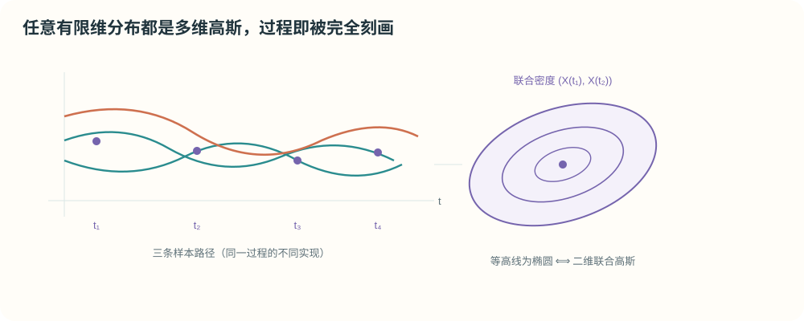
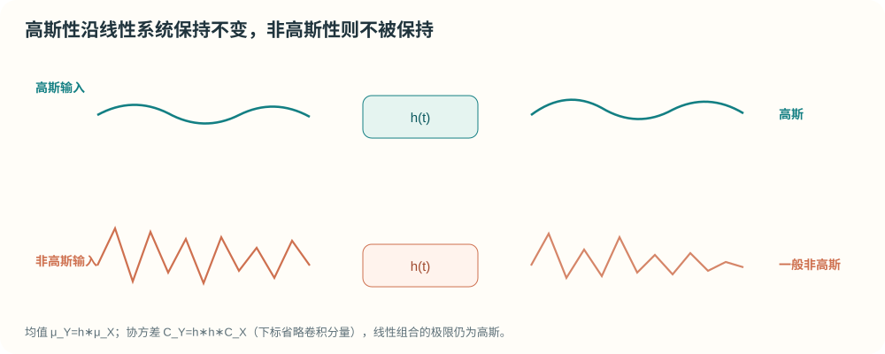
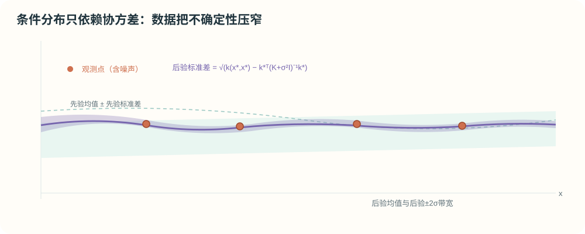
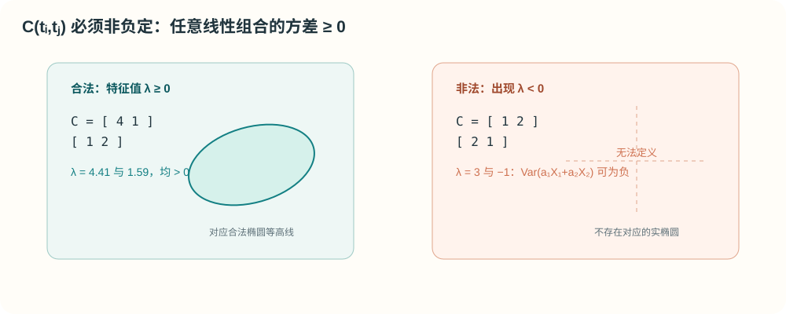

CHAPTER 15 · 系统与模型
高斯过程
当一族随机变量在任意有限个时刻上的联合分布都是多维高斯，过程就被两个函数——均值与协方差——完全锁死。这让积分、微分、条件化都能写成闭式，也让“不相关 = 独立”第一次真正成立。
- 用有限维联合分布定义高斯过程，并写出均值、协方差函数与合法性的非负定条件
- 说明为什么线性时不变系统保持高斯性，并写出输出均值与协方差
- 写出多维高斯的条件均值/条件协方差，并解释它与高斯过程回归的关系
为什么高斯过程值得单独一章
取一个 1 kΩ 的金属膜电阻，保持在 300 K，把两端电压放大后以 10 kHz 采样。你会得到一列看起来毫无规律的数。可实际测量告诉你一件事：无论抽取哪几个采样时刻，这些电压的联合分布几乎总能被一个多维高斯密度很好地描述，而且只要定下均值和协方差，就能算出条件概率、预测值与误差带。
这不是巧合，而是三个性质叠加的结果。
- 中心极限定理（CLT）。热噪声电压是数量极多的、近似独立的小扰动之和，其归一化和在很弱的条件下趋近高斯（第 5 章）。因此高斯性常是“许多小效应叠加”的极限近似，而不是精确恒等式。
- 线性运算保持高斯性。高斯随机变量经过线性组合仍然联合高斯；积分、卷积是线性组合的极限，因此高斯信号通过线性时不变（LTI）系统后仍是高斯信号。
- 均值与协方差即可完全描述。一般过程需要全部有限维分布才能刻画，而高斯过程只要两个函数 m(t) 与 C(t,s)。
本段的简化说明：上面把热噪声当作精确高斯只是为了先建立直觉；真实电阻噪声只是“近似高斯”，且在极高频、极短时间尺度上会偏离（第 10 章）。
定义与刻画：有限维分布与非负定协方差
定义。随机过程 {X(t), t∈T} 是高斯过程，当且仅当对任意正整数 n 与任意 t₁,…,tₙ∈T，随机向量 (X(t₁),…,X(tₙ)) 服从多维高斯分布。只需检查所有有限维子集（fidis），过程的概率结构就完全确定。
刻画它只需要两个函数：均值函数 m(t)=E[X(t)] 与协方差函数 C(t,s)。零均值时，C(t,s) 就等于自相关 R(t,s)。
不是任意两个函数都能当均值与协方差。对任意 n、任意 t₁,…,tₙ 与任意实系数 a₁,…,aₙ，协方差矩阵必须对称非负定：
这条要求其实很自然：左边正是线性组合 ΣaᵢX(tᵢ) 的方差，方差不能为负。当协方差矩阵正定时，联合密度存在：

“边缘高斯”不等于“联合高斯”：每个 X(tᵢ) 单独看是高斯的，并不能保证整个向量联合高斯；非负定条件也可能被破坏。只有联合高斯时，“不相关”才等价于“独立”（本章后文给出反例）。
线性时不变系统保持高斯性
设输入 X(t) 是高斯过程，单位冲激响应 h(t) 描述一个 LTI 系统，输出为 Y(t)=∫h(τ)X(t−τ)dτ。若 ∫|h(τ)|dτ<∞（稳定），积分在均方意义下收敛，且输出仍然是高斯过程。
理由很短：对任意有限时刻，向量 (Y(t₁),…,Y(tₙ)) 的每个分量都是 (X(t)) 的线性泛函，因而它是联合高斯向量 (X(t₁),…,X(tₙ)) 经过一个线性变换（矩阵）得到的。线性变换把高斯向量映射为高斯向量，因此 Y 的所有有限维分布仍为高斯。
均值与协方差沿卷积传递：
当输入是宽平稳（WSS）时，输出也 WSS，且频域关系回到第 12–13 章的结论：μY=μXH(0)，SY(ω)=|H(ω)|²SX(ω)。高斯性使得这两个统计量足以描述全部分布，而在非高斯输入下它们只给出二阶信息。

反例：非线性会破坏高斯性。设 X~N(0,1)，令 Y=X²。X 是高斯的，但 Y 服从自由度 1 的卡方分布，密度在 0 附近发散，早已不是高斯。只要系统含平方、限幅、取绝对值等非线性环节，“线性保持高斯”就不再适用。
多维高斯的条件分布：线性且解析
把联合高斯向量分块为 X=(X₁,X₂)，对应地 μ=(μ₁,μ₂)，Σ=[Σ₁₁ Σ₁₂; Σ₂₁ Σ₂₂]，并假设 Σ₂₂ 可逆。给定 X₂=x₂ 时，条件分布仍然是高斯：
两个结论很关键：
- 条件协方差不依赖观测值 x₂。不论测到的 X₂ 是大是小，X₁ 的不确定性减少量都一样，完全由协方差结构决定。
- 条件均值是 x₂ 的线性函数。矩阵 Σ₁₂Σ₂₂⁻¹ 就是“从 X₂ 预测 X₁”的最优线性增益。在联合高斯下，最小均方误差（MMSE）估计器就是线性的，非线性估计无法再改善（第 20–22 章的滤波由此展开）。
与正交性原理的联系：在高斯下，“误差与观测正交”与“误差与观测独立”是同一件事，因此线性 MMSE 也是全局 MMSE。这个便利性仅对联合高斯成立。
从条件分布到高斯过程回归
把“(15.6)(15.7)”从有限维搬到函数空间，就得到高斯过程回归（GPR）：直接给函数 f 一个高斯过程先验 f~GP(m(x), k(x,x'))，把核函数 k 当作协方差函数。给定带噪观测 yᵢ=f(xᵢ)+εᵢ，εᵢ~N(0,σ²)，在测试点 x* 处：
对比 (15.6)(15.7)：K 就是训练点之间的协方差矩阵，k* 是测试点与训练点的互协方差，增益 (K+σ²I)⁻¹ 扮演了 Σ₂₂⁻¹ 的角色。GPR 就是在函数空间上做条件化，预测方差越小，说明该处被数据“钉”得越紧。

| 核函数（协方差） | 表达式 | 典型性质 |
|---|---|---|
| RBF / 平方指数 | σ²exp(−‖x−x'‖²/(2ℓ²)) | 无穷可微，极平滑 |
| Matérn(ν) | ν=3/2: σ²(1+√3r/ℓ)e−√3r/ℓ | 有限可微，平滑度可控 |
| 周期核 | σ²exp(−2sin²(π|x−x'|/p)/ℓ²) | 周期性重复 |
| 线性核 | σ²·xᵀx' | 等价于贝叶斯线性回归 |
| 有理二次（RQ） | σ²(1+‖x−x'‖²/(2αℓ²))−α | 多尺度平滑 |
核函数与噪声方差等超参数通常通过最大化边缘似然（而非拟合残差）学习；核的选择直接决定了过程平滑性与不确定性形状。
可复现核查
下面用固定随机种子检验三件事：用 Cholesky 分解采样得到的向量是否具有预期的协方差；条件方差公式是否与蒙特卡罗一致；非负定条件是否能真的被破坏。依赖 NumPy。
import numpy as np
rng = np.random.default_rng(15)
# 1) GP 采样：零均值，RBF 核 k(t,s)=exp(-(t-s)^2/2)
t = np.linspace(0, 4, 6)
K = np.exp(-(t[:, None] - t[None, :]) ** 2 / 2)
L = np.linalg.cholesky(K + 1e-12 * np.eye(6))
samples = (L @ rng.standard_normal((6, 20000)))
assert np.allclose(samples @ samples.T / 20000, K, atol=0.06)
# 2) 条件分布：X1 与 X2 为标准正态，相关系数 rho
rho = 0.6
Sig = np.array([[1, rho], [rho, 1]])
x2 = 0.8
mean_cond = Sig[0, 1] / Sig[1, 1] * x2
var_cond = Sig[0, 0] - Sig[0, 1] ** 2 / Sig[1, 1]
z = rng.multivariate_normal([0, 0], Sig, 50000)
near = z[np.abs(z[:, 1] - x2) < 0.05]
assert abs(near[:, 0].var() - var_cond) < 0.02
assert abs(near[:, 0].mean() - mean_cond) < 0.05
# 3) 合法与非负定：正定的协方差特征值全 >= 0；下面这个不是
bad = np.array([[1.0, 2.0], [2.0, 1.0]])
assert np.linalg.eigvalsh(Sig).min() >= 0
assert np.linalg.eigvalsh(bad).min() < 0
检查点（与图中数值同源）：(1) 样本协方差向 K 收敛；(2) 条件方差与公式一致；(3) 合法协方差矩阵的特征值均非负，而非负定矩阵会出现负特征值。
边界与陷阱
- 不相关 ≠ 独立（除非联合高斯）。取 X~N(0,1)，S 等概率取 ±1 且与 X 独立，令 Y=SX。可算出 Y~N(0,1) 也是高斯，且 Cov(X,Y)=E[S]E[X²]=0；但 |X|=|Y|，两者明显相关，并不独立。原因是 (X,Y) 不是联合高斯。这正是本章反复强调“联合”的原因。
- 协方差必须非负定。随手写下的对称函数不一定合法。若某线性组合的方差为负，则不存在任何实高斯向量与之对应。RBF、线性核等常见核已保证非负定，自造核应验证。
- CLT 是极限陈述，不是恒等式。“很多小效应相加”通常只给出近似高斯；有限样本、重尾项或强相关都会破坏该近似，直接套用高斯结论会低估尾部风险。
- 线性保持高斯，非线性不保持。限幅、平方、量化后一般不再是高斯；此时均值与协方差只能给出二阶信息，完整分布需重新求。
- GPR 的置信区间依赖核假设。预测方差的可信度取决于核能否描述真实结构。若真实函数比核假设更不光滑、或含多重尺度，后验方差会在未采样区过于乐观；应先验证残差，而不应盲目相信窄带。

下一章将把“窄带”假设叠加在高斯过程上，引入希尔伯特变换、解析信号与复包络——通信与雷达中几乎无处不在的表示工具。
参考与核查依据
- MIT OpenCourseWare · Random Processes：高斯过程、均值/协方差函数与线性变换下的高斯性。
- ProbabilityCourse · Random Vectors：多维高斯、分块协方差与非负定性。
- Rasmussen & Williams, Gaussian Processes for Machine Learning (MIT Press, 2006)：第二章定义与核函数，第三章条件分布与边缘似然。
- ProbabilityCourse · Conditional Distributions：条件均值与条件方差的定义背景。